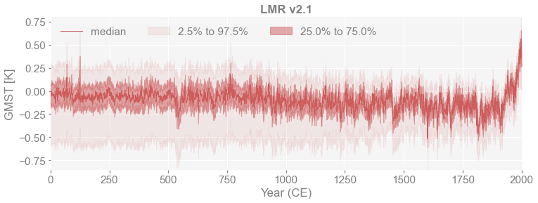
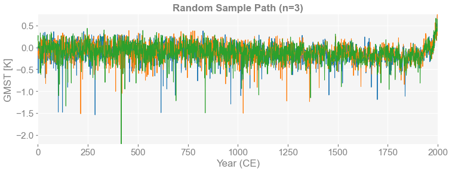

Quickstart¶
[1]:
%load_ext autoreload
%autoreload 2
import pens
Load data from a .nc file¶
[2]:
# the data can be downloaded from:
# https://atmos.washington.edu/%7Ehakim/lmr/LMRv2/gmt_MCruns_ensemble_full_LMRv2.1.nc
path = './data/gmt_MCruns_ensemble_full_LMRv2.1.nc'
ens = pens.EnsembleTS().load_nc(path, var='gmt')
[27]:
print(ens.value.shape)
print(ens.nt)
print(ens.nEns)
(2001, 2000)
2001
2000
Plot the quantiles of the ensembles¶
[4]:
fig, ax = ens.plot_qs(ylabel='GMST [K]', title='LMR v2.1')

Get and plot random sample paths from the ensembles¶
[17]:
for n in [1, 3]:
ps = ens.sample_path(n=n, seed=2333)
fig, ax = ps.plot(ylabel='GMST [K]', title=f'Random Sample Path (n={n})')
print(ps.value.shape)
(2001, 1)
(2001, 3)


[ ]: